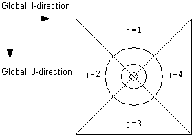
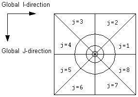

Radial coordinates are stored in R, Theta, Z units, where Theta is the azimuthal angle measured clockwise in degrees.
Global radial domains are numbered clockwise from vertical. Note that, for global radial domains NY = NTHETA >= 1.
The following figure shows the numbering convention used for local radial grids contained in a single column of host cells:

The radial cells are numbered so that Theta increases in an anti-clockwise direction.
For post processing displays, the LGR center should be calculated using the x, y coordinates of the geometric center of the top host cell face. Also note that the outer nodes of the radial grid are stored with the R-coordinate set to the outer equivalent radius of the LGR. These coordinates may need to be adjusted to fit the outer radial cells into the host cells.
The following numbering convention is used for local radial grids contained in a box of 4 host columns:

The LGR center is taken as the coordinate line at the center of the box of host cells.
For a single-column radial refinement, the number of cells in the Theta-direction must be set to 1 or 4. A radial refinement in 4 host columns must be specified with 4 or 8 sectors.
Note that if a radial LGR is constructed in a corner-point host grid, ECLIPSE may fill in the maximum number of coordinates to fully define the local grid. For a single theta refinement in a single host cell column NY may be 1 or 4. For a 4 theta refinement in 4 host columns NY is 8. The correct value for NTHETA will be written to the GRIDHEAD array. COORD and ZCORN are dimensioned with NY but all other arrays (for example ACTNUM, CORSNUM, HOSTNUM) and the corresponding solution data arrays will be dimensioned according to NTHETA.